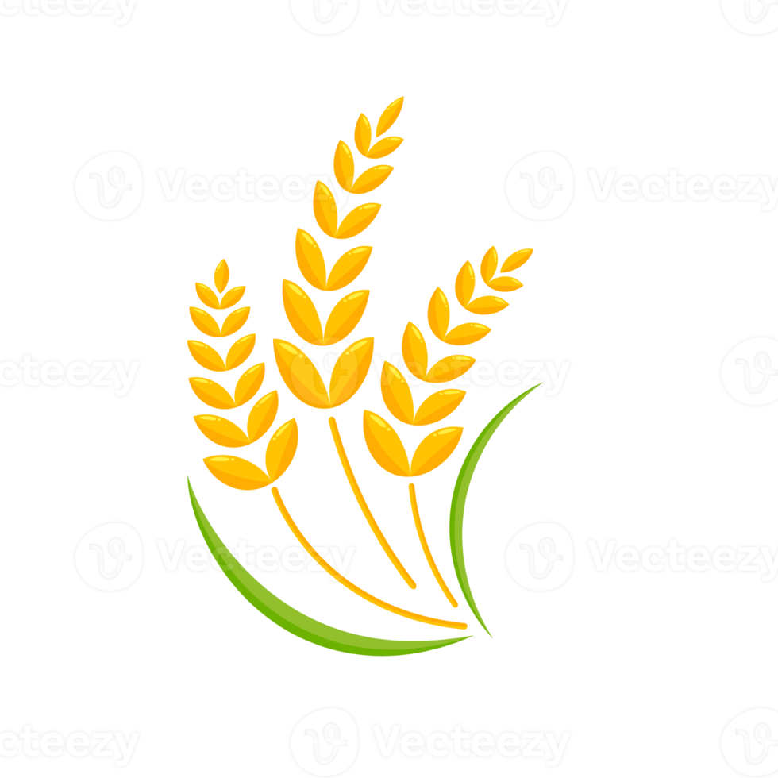

Notre programme en quelques points
L’économie et l’emploi sont une préoccupation majeure des Français au quotidien. De plus, les finances publiques sont dans un état désastreux. Une réforme en profondeur pour une justice plus grande est donc nécessaire.
- Augmenter le SMIC à 1.600 euros : Nous devons soutenir les TPE/PME pour cela.
- Revoir les tranches d’imposition à 14 tranches : L’objectif sera de prélever plus équitablement les citoyens.
- Restaurer l’ISF et taxer la plus-value.
- Taxer les énergéticiens : ils ont fait des profits astronomiques.
- Autoriser sous condition les casinos en ligne et les taxer.
- Revaloriser les voies professionnelles dans l’éducation : Il s’agira de sensibiliser quant à l’attractivité du métier, de favoriser l’acquisition d’expérience pour l’ascenseur social.
- Augmenter de 10 % le point d’indice des fonctionnaires.
- Réformer l’impôt sur l’héritage : pour le rendre plus progressif en ciblant les plus hauts patrimoines et instaurer un héritage maximum.
- Supprimer les différents Hauts Conseils (Ex : Haut Conseil de la santé publique) : Leur utilité est nulle.
La santé de tous et l’égalité entre toute la population est primordiale pour la stabilité de la nation. Il en va de l’intérêt de tous.
- Contrôler les fraudes pour la sécurité sociale.
- S’opposer à l’aide à mourir : il faut chercher à accompagner.
- Obliger les entreprises à payer les personnes en situation de handicap et les salariés au même titre respectivement qu’un salarié normal et qu'un homme.
- Généraliser les infrastructures d’accessibilité pour les personnes handicapées dans les lieux privés d’ici 5 ans : en cas de refus, des sanctions seront mises en place.
- Inviter les jeunes à limiter le temps passé sur les réseaux sociaux (en lien avec 6. et 13.) et accompagner les jeunes troublés.
- Augmenter le nombre de lits d’hôpitaux.
L’immigration est un thème qui cristallise des tensions dans la population ; nous estimons qu’elle peut être bénéfique pour la nation si l’on accueille dignement ceux qui se déplacent contre leur gré.
- Favoriser l’insertion professionnelle des étrangers motivés à travailler, notamment dans les secteurs en tensions (Hôtellerie-restauration, BTP).
- Accorder plus de visas de long séjour avec un objectif de 350 000 par an notamment pour les étudiants, motifs familiaux et motifs humanitaires pour encourager la nouvelle main-d'œuvre et les talents étrangers.
- Augmenter les plafonds de ressources pour l’accès à l’AME de 10% pour les foyers de 1 ou 2 personnes et de 5% pour 3 ou 4 personnes.
-
Ouvrir des postes de fonctionnaires dont l’objectif est de rediriger les immigrés vers des secteurs qui en ont besoin en leur finançant des formations adaptées à leurs compétences :
- Au moins 20 000 conseillers supplémentaires spécialisés dans les secteurs en tensions avec pour objectif 1 conseiller pour 50 à 100 demandeurs d’emplois.
- 15 000 postes de formateurs de langues pour aider à l’intégration et l’apprentissage du français.
Le régalien n’est pas toujours une solution pérenne. Il faut alors concilier médiation et sanction.
- Restaurer une police de proximité en adaptant les formations actuelles des forces de l’ordre.
- Interdire les grenades mutilantes et LBD pour les opérations de maintien de l’ordre.
- Réduire la surpopulation carcérale en transformant les peines carcérales légères en TIG.
- Recruter davantage d’éducateurs de rue pour encadrer et sensibiliser les jeunes dans les banlieues.
- Rendre obligatoire l’usage de caméras-piétons pour toutes les interventions policières.
- Accentuer les sanctions vis-à-vis des violences conjugales.
Une partie du territoire de la République est négligée par les élites politiques. C’est l’heure du changement.
- Décentralisation des ministères : Ils doivent être au plus près de leurs responsabilités pour en comprendre les enjeux.
- Aider massivement Mayotte : Reconstruire des logements solides pour garantir la sécurité des citoyens, restaurer les canalisations d’eau potable.
- Soutenir les territoires de la “diagonale du vide”, augmenter le déploiement des lignes de télécommunications (fibre optique).
- Lutter définitivement contre l’orpaillage illégal en Guyane en organisant des contrôles plus important auprès des flux logistiques majeurs.
L’école doit redevenir ce qu’elle aurait toujours dû être : un temple de l’apprentissage et de l’épanouissement pour tous.
- Rendre Parcoursup plus transparent : Les critères seront moins discriminants pour les élèves
- Augmenter le salaire du personnel éducatif : Pour une revalorisation du métier, nous devons l’augmenter au moins de 50% dans l’enseignement public
- Désengorger les classes : Nous devons en ouvrir plus fréquemment.
- Encourager les talents vers des voies professionnelles : Arrêter les stigmatisations.
- Revoir les emplois du temps : Décharger des élèves fatigués en diminuant progressivement les heures dans certaines matières.
- Lutte contre le harcèlement : Obliger les harceleurs à indemniser leurs victimes pour les dommages psychologiques ou financiers causés.
- Améliorer la qualité des cantines scolaires et la plafonner à 1 euro pour tous les élèves.
- Revaloriser les matières d’enseignement scientifique au lycée.
Le logement est sans aucun doute une question majeure pour le niveau de vie de chacun. Ainsi, chaque citoyen devrait avoir accès à un logement décent qui lui permet de vivre dignement.
- Ouvrir le prêt à taux zéro à tous les ménages primoaccédants sans distinction géographique ou entre neuf ou ancien.
- Relancer la construction du logement social en revenant sur les coupes de Macron pour les organismes HLM de 1,4 milliard d’euros annuels.
- Augmenter les subventions pour l’isolation thermique des bâtiments.
- Aller vers le 0 sans-abris à la fin du mandat.
- Contrôler les AirBNB qui tuent le marché locatif.
Malgré notre place de première puissance agricole européenne, nous importons aujourd’hui plus que nous vendons. Et la mécanisation massive de l’agriculture depuis les années 50 nous pose de sérieux problèmes.
- Refuser l’accord en l’état avec le Mercosur à l’échelle européenne : Il est injuste envers nos agriculteurs.
- Cesser la course à la rentabilité et la chasse à l’agrandissement en taxant les grandes productions et la sur-mécanisation.
- Encourager l’agriculture biologique avec des subventions.
- Encourager la production locale pour diminuer les importations et la compétitivité.
- Ouvrir au moins 100 000 emplois dans l’agriculture pour compenser cette perte de production des machines et la baisse d’emplois en 2020.
- Encourager la reconversion professionnelle dans le secteur agricole par les conseillers.
Avec de telles mesures, nous pouvons espérer lutter également contre la crise sociale dévastatrice des agriculteurs français, qui ne peut qu’entraîner d’autres crises encore plus importantes.
Il est essentiel de mettre en place un système plus égalitaire et juste pour repenser le mix énergétique du pays. Il faut changer d’échelle, agir de façon déterminée, juste et organisée.
- Inscrire la défense de l’environnement dans la Constitution.
- Promouvoir les énergies renouvelables localement.
- Rénover ou remplacer les anciennes centrales mais les conserver pour le moment.
- Augmenter le nombre d’AMP totales : Protéger la biodiversité marine.
- Mettre en place une véritable taxe carbone : Polluer plus signifie payer plus pour compenser.
- Sensibiliser continuellement les populations pour prévenir le risque climatique.
- Augmenter le bonus écologique “VAE” pour l’achat d'un vélo à assistance électrique neuf ou d’occasion à 500€ maximum.
- Allouer un budget total de 300 millions d’euros par an pour le financement de pistes cyclables partout en France.
La défense de notre pays doit exister pour le peuple, mais surtout avec le peuple. Ainsi, il est nécessaire de faire évoluer nos positions pour que notre défense réponde aux problématiques actuelles.
- Fermer ou réduire les bases militaires françaises à l’étranger lorsqu’elles ne sont pas justifiées par des accords mutuels ou des menaces claires. (Exemple du Tchad : la base de N'Djamena).
- Réorienter les effectifs vers les zones climatiques sensibles : Les effets cyclone Chido et les feux de forêts doivent être atténués à l’avenir face au renforcement du changement climatique.
- Lutter contre les discriminations et favoriser une plus grande diversité au sein des armées.
- Encadrer l’utilisation des drones, de l’intelligence artificielle et des armes autonomes, pour éviter les dérives éthiques.
- Modifier le budget de l’armée en modifiant le type de force : Les enjeux de demain sont le cyber et le spatial.
- Travailler avec l’UE pour la constitution d’une défense européenne tant attendue : Accélérer les projets MGCS et Eurofighter.
Au milieu des tensions internationales actuelles, il est essentiel de faire valoir nos positions et de repenser nos partenaires qui vont jouer à la fois l’avenir de notre pays mais aussi de la planète.
- Respecter l’objectif de 0,7 % du PIB pour l’aide publique au développement (APD) et orienter ces fonds sans détournement vers la réduction des inégalités, l'accès à l'éducation, et les infrastructures de santé.
- Développer des partenariats internationaux pour le transfert de technologies propres et l'accès aux énergies renouvelables dans les pays du Sud : nous devons rembourser notre dette climatique.
- Prôner une politique étrangère indépendante avec le soutien de l’UE, refusant tant l’influence des USA que de la Chine.
- Soutenir les populations qui souffrent (en Ukraine et à Gaza) sur les plans humanitaire et sur la reconstruction des zones de conflits à l’avenir.
- Décréter un embargo sur les livraisons d’armes aux États commentant des crimes de guerre.
- Accélérer le retour des antiquités volées aux ex-colonies, notamment en Afrique : le patrimoine culturel leur revient de droit.
Les nouvelles technologies sont en développement croissant et exponentiel. Il va de soi que l’une des priorités dans le monde actuel est de garder le cap et de continuer à croître avec elles.
- Accélérer la mise en oeuvre d’une loi sur la régulation de l’IA à l’échelle européenne.
- Accentuer la pression sur les GAFAM quant à l’endiguement de la haine en ligne.
- Soutenir les startups numériques françaises pour la compétitivité de la France dans le domaine (investissements déduits des impôts pour les donateurs/actionnaires pour une part de 10 000€ max/an).
- Renforcer la cybersécurité en formant les fonctionnaires.
- Améliorer les échanges numériques pour les invalides.
- Faciliter les démarches administratives liées à l'État.
- Protéger les infrastructures vitales de cyber attaques (Hôpitaux touchés forcés à l’arrêt).
Tous les citoyens doivent être concernés par la culture de leur pays. De même, il est essentiel d’inscrire une pratique sportive régulière dans les habitudes de chacun pour assurer une bonne condition physique.
- Instaurer 4h de sport par semaine pour les élèves à tous les niveaux.
- Augmenter le montant du Pass’Sport à 150 euros et étendre son utilisation au sport scolaire.
- Augmenter de 10% les allocations du pass culture.
- Augmenter la fréquence des sorties scolaires en environnement local, surtout pour le plus jeune âge. On peut estimer le budget total à allouer aux sorties scolaires à environ 1 milliard d’euros pour 5 à 6 sorties par classe de primaire par an.
- Instaurer un vote annuel dans chaque commune pour que les citoyens choisissent eux-mêmes les projets culturels mis en avant dans leur commune.
- Organiser au moins une fois par an dans chaque établissement scolaire de primaire et collège une rencontre avec un ou plusieurs club(s) sportif(s) de la région pour permettre aux élèves de découvrir certains sports qu’ils ne peuvent pas pratiquer.
La situation politique actuelle témoigne de nombreuses tensions à tous les niveaux. Si le système et la façon dont est exercée la démocratie n’évoluent pas, des solutions ne pourront pas apparaître.
- Simplifier l’organisation de scrutins plus récurrents : Consulter plus souvent les citoyens.
- Durcir les règles de l’article 49 alinéa 3 de la Constitution : Le gouvernement ne doit plus outrepasser la voix du peuple.
- Assouplir les règles du RIP (référendum d’initiative partagée) : Autoriser les députés à y avoir recours.
-

Economie et Emploi
-

Social et Santé
-

Immigration
-
Justice
-

Outre-Mer
-

Education et jeunesse
-
Logement
-

Agriculture
-

Ecologie et biodiversité
-
Défense
-

Politique internationale
-
Enjeux technologiques
-

Culture et Sport
-
Démocratie